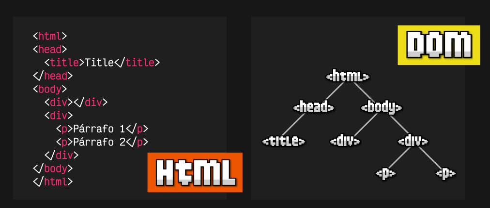

5. Lenguajes para la Web
En esta sección hablaremos de los lenguajes de marcado como son el HTML, CSS y javascript, además de otros como también XML.
Lenguajes de Marcado
XML (eXtensible MarkUp Language)
Es un formato sencillo y flexible utilizado fundamentalmente para el intercambio de datos en Web.
- Derivado de
SGML (Standard Generalize MarkUp Language), que sin embargo resultó muy complejo para su interpretación y procesamiento por clientes web y aplicaciones. - Fijó las bases de los lenguajes de marcado, basado en etiquetas.
- Especificación Declarativa, describiendo estructura y otros ámbitos del documento.
- Es muy riguroso, por apertura y cerrado de etiquetas.
- Es estándar libre y abierto de la W3C.
- Es la base del desarrollo de API's.
message es el elemento raiz.
La estructura de un documento XML puede ser definido en un DTD (Document Type Definition) heredado de SGML, ya en desuso, actualmente se usa XSD.
- Ofrece un amplio sistema de tipos.
- Permite definir restricciones sobre la estructura de los documentos.
XSDesta basado enXML(favorece su procesamiento).
Ventajas:
- Formato abierto y estándar.
- Puede representar casi cualquier tipo de dato.
- Fácil de leer por la máquina y por humanos.
- Multitud de herramientas para su procesamiento.
Inconvenientes:
- Genera ficheros muy voluminosos que pueden empeorar el rendimiento.
- Algunos datos pueden ser difíciles de encajar en un formato
XMLválido. - El código
JSpara navegar el árbol de etiquetas es muy voluminoso y tedioso.
HTML (HyperText MarkUp Language)
Es el lenguaje de marcado basado en texto más utilizado en el lado de cliente, que sirve para desarrollar la estructura de una página web permitiendo:
- Publicar cabeceras, texto, tablas, imágenes, listados, etc...
- Acceso a documentos en linea a través de hipervínculos.
- Heredado de
XML (XHTML)hasta la extinción deHTML4.
Un poco de Historia
-
HTMLse desarrolló en CERN, pasando posteriormente a la IETF durante los 5 primeros años (1990 – 1995). -
Con la creación del W3C, adoptó HTML3 en 1995, avanzando hasta un modelo más pragmático –
HTML3.2 – en 1998. -
La W3C vio la necesidad de evolucionar
HTMLhacia un lenguaje más estructurado basado enXML, obteniendoHTML4. -
Surge XHTML 1.0 (
HTML4) en 2000. -
Sucesivas evoluciones de
XML+HTMLderivan enXHTMLDOM Level 1 (1998), DOM Level 2 (2000-2003) y DOM Level 3 (2004). -
XForms surge en 2003, para el desarrollo de formularios sin necesidad de recodificar los motores de renderizado de los navegadores.
-
El desarrollo de
XMLpermite la especificación de nuevos formatos como RSS (después, Atom). -
En el W3C Workshop 2004 se establecen las bases de
HTML5, al que se unen Opera, Apple y Mozilla (que forman WHATWG) – su desarrollo se inició junto con W3C en 2007. -
Aparece la recomendación de
HTML5en 2012 por la W3C, incluyendo información semántica en los documentos. -
Aparece la especificación
HTMLde WHATWG (estado: Living Standard) en 2016. -
En mayo de 2019, WHATWG y W3C firman un acuerdo para llevar una única especificación de
HTMLy DOM.
Lenguajes de Diseño *CSS (Cascading Style Sheets)
Creado en [1995]Es el lenguaje de hoja de estilos utilizado para la presentación del diseño gráfico de un documento escrito en el lenguaje HTML:
- Describe la estructura del diseño (layout), colores, fuentes y reglas de presentación.
- Permite describir diferentes presentaciones para distintos dispositivos.
- Múltiples documentos web pueden compartir el mismo diseño.

Métodos de aplicación:
En línea, utilizando el atributo style de HTML.
<body style="background-color: #FF0000;">
Interno, incrustando CSS como contenido de la etiqueta.
<style type="text/css">
body {background-color: #FF0000;}
</style>
Externo, vinculando el documento HTML a un fichero de estilos externo con extensión .css.
<link rel="stylesheet" type="text/css" href="style/style.css" />
CSS cubre tres aspectos diferentes de estilo y maquetación:
- Estilo del texto, incluyendo fuentes, colores de fuente, tipos de ítems de las enumeraciones, etc.
- Estilo de las cajas, considerando que todos los elementos de
HTMLson considerados como cajas con las siguientes propiedades:
Permite modificar el estilo y tamaño del contenido, relleno, borde, margen y caja
- Distribución de las cajas, permitiendo modificar su posición absoluta y relativa de una respecto a otras.
Fundamentos del Lenguaje CSS
CSS define reglas que se aplican a un documento, y modifican el modo en que este es presentado.
Cada regla CSS se compone de:
-
Conjunto de propiedades: valores establecidos para la presentación del documento
HTMLo Cada par propiedad-valor recibe el nombre de declaración. -
Selector: “Seleccionador” de los elementos
HTMLafectados por el nuevo valor de la propiedad.
Lenguajes de Programación JS (JavaScript)
Es el lenguaje de programación del lado de cliente predominante.
Javascript permite desarrollar páginas web interactivas/reactivas (sitios dinámicos) en los que hay que integrar algún tipo de programación (ej. para validación de datos).
- Código escrito como scripts separados del contenido/estructura y diseño del documento web.
- Código puede ser incrustado en marcas
HTMLo vinculado desde un fichero separado del documento, que debe ser accesible al cliente. - El código se ejecuta en el cliente (navegador web) o en un entorno externo en el dispositivo del usuario.
Originalmente desarrollado (nombre del proyecto: Mocha) y liberado por Netscape en septiembre de [1995] bajo el nombre de LiveScript.
Javascript es un lenguaje multiparadigma, basado en prototipos y dinámico.
-
Multiparadigma: Permite programación funcional (con funciones de primera clase), orientada a objetos e imperativa.
-
Funciones de primera clase: Paradigma en el que las funciones son los elementos de primer nivel, permitiendo pasar funciones como argumentos de otras, funciones como valores de retorno y asignar funciones a variables.
-
Basado en prototipos (programación classless): Los objetos no se instancian, sino que se clonan (a partir de prototipos) o son programados explícitamente por el programador.
<script src=“miscript.js"></script>
var genericAnimal = Object.create(null);
genericAnimal.name = 'Animal’;
genericAnimal.gender = 'female’;
genericAnimal.description = function() { return 'Gender: ' + this.gender + '; Name: ' + this.name;};
var cat = Object.create(genericAnimal);
cat.purr = function() { return 'Purrrr!'; };
var colonel = Object.create(cat);
colonel.name = 'Colonel Meow’;
var puff = Object.create(cat);
puff.name = 'Puffy';
Document Object Model (DOM)
DOM es una interfaz independiente del lenguaje y de la plataforma, que permite el acceso y actualización dinámica al contenido, estructura y estilo de los documentos a los lenguajes de script.
En Javascript, DOM es una API para documentos HTML y XML, que proporciona una representación estructural del documento
Permite manipular, crear, eliminar y cambiar el código de los elementos escritos en HTML y CSS aplicando valores dinámicos.
En DOM, los elementos de HTML son objetos:
- Tiene las propiedades de todos los elementos
HTML. - Tiene métodos para acceder a todos los elementos
- Recoge los eventos para todos los elementos
HTML.

El árbol DOM tiene 4 tipos de nodos:
- Nodo documento (página
HTMLcompleta) - Nodo elemento
- Nodo atributo (en las etiquetas de inicio de
HTML) - Nodo texto (dentro de los elementos)
Javascript DOM permite consultas en los elementos HTML.
const elem = document.getDocumentById(“one” );
Recientemente, se han añadido las consultas de selectores CSS, lo que permite mayor flexibilidad, aunque no se garantiza que todos los navegadores sean compatibles.
const first_elem = document.querySelector (“li.one” );
Otros Lenguajes de Serialización
JSON (JavaScript Object Notation)
Es un lenguaje de intercambio de datos ligero, basado en texto e independiente del lenguaje:
- Define un conjunto de reglas de formato para la representación de datos estructurados.
- Derivado de ECMAScript.
- Representa los datos como un conjunto de objectos de
Javascript. - Popularizado por su uso en APIs y servicios web.
JSON es un estándar IETF (última actualización: dic. 2017).
{ "private": "true",
"from": {
“id”: "alba@miempresa.es",
“text”: “Alba Lopez”
},
"to": {
“id”: "Roberto@miempresa.es",
“text”: “Roberto Manuel”
},
"subject": "Mañana en mi fiesta de cumpleaños!",
“content": {
"language": “spanish",
"text": "Oye, Roberto, no te olvides de llamarme para organizar la fiesta." }
}
YAML (Yet Another MarkUp Language) [2006]
Es un lenguaje de serialización –legible por el humano– utilizado en general para ficheros de configuración:
- Es un lenguaje orientado a líneas (line-oriented) que ofrece puramente una representación de datos (no necesariamente estructurados)
YAMLno ofrece comandos (no es ejecutable)YAMLno es un lenguaje de etiquetas (comoXML)- Utiliza una sintaxis mínima diferenciada de
XML, más cercana al estilo de formato de Python. - Serializado en ficheros con extensión .yaml.